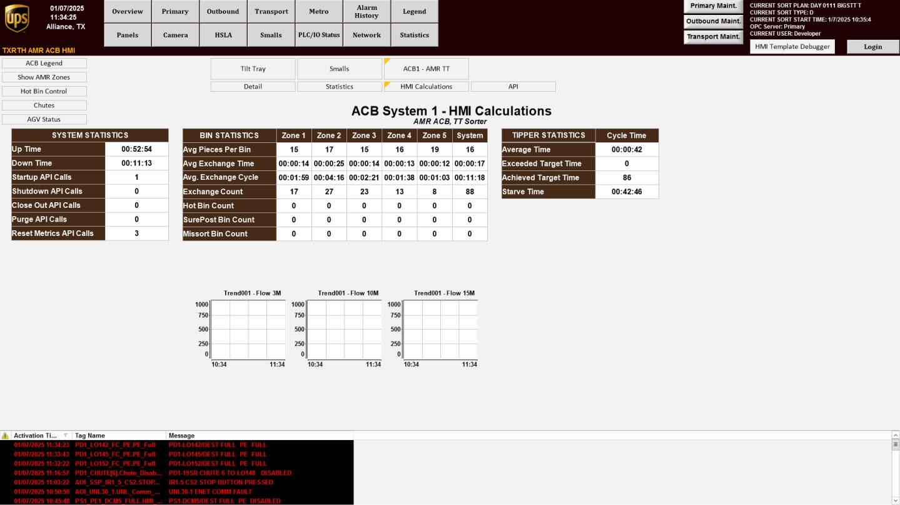
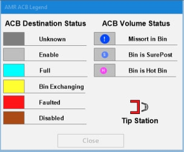

| Procedure ID | proc_review_information_categories_on_the_hmi_calculations_screen_v1 |
|---|---|
| Title | Review Information Categories on the HMI Calculations Screen |
| Procedure Type | reference |
| Primary Role | operator |
| Support Safe | Yes |
| Validation Status | needs_sme_review |
| Merge Status | source_finalized |
Use the HMI Calculations screen to identify and review the documented categories of operational information shown on the Tilt Tray overview.
Use this reference procedure when an operator needs to confirm that the HMI Calculations screen presents the documented information categories on the Tilt Tray overview: system operations, bin statistics, and tipper statistics.
Responsible role: operator
Instruction:
From the "ACB System" screen, press HMI CALCULATIONS to access the "Tilt Tray" overview screen.
Expected result:
The HMI Calculations screen is displayed.
Screens / Images:


Stop or Escalate If:
Responsible role: operator
Instruction:
Review the displayed HMI Calculations screen and identify the information areas associated with system operations, bin statistics, and tipper statistics.
Expected result:
The operator can identify the three documented information categories on the screen.
Screens / Images:
Stop or Escalate If:
Responsible role: operator
Instruction:
Compare the visible screen content to the documented categories: system operations, bin statistics, and tipper statistics.
Expected result:
The displayed content aligns with the three documented category names from the source.
Screens / Images:
Stop or Escalate If:
Responsible role: operator
Instruction:
Record or communicate which of the documented information categories are being viewed, using only the source-provided category names.
Expected result:
The viewed categories are recorded or communicated as system operations, bin statistics, and/or tipper statistics using source terminology only.
Screens / Images:
Stop or Escalate If: